Students using MARVLS
Learning through interaction
These photographs show classroom and interview settings in which students physically manipulate the AR models and use gestures while explaining their reasoning.
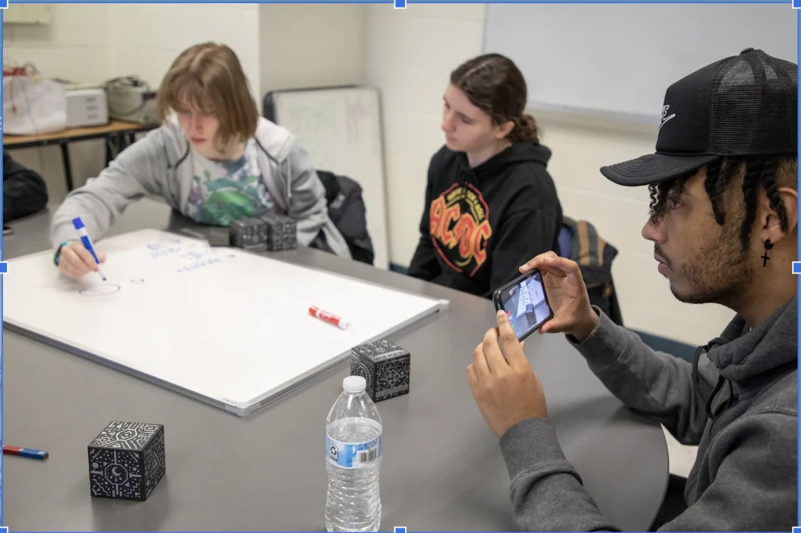
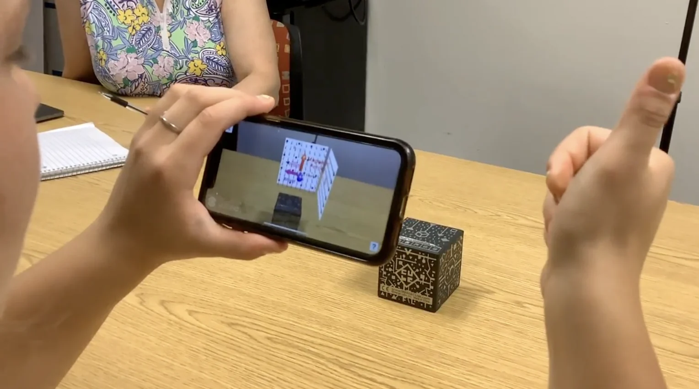
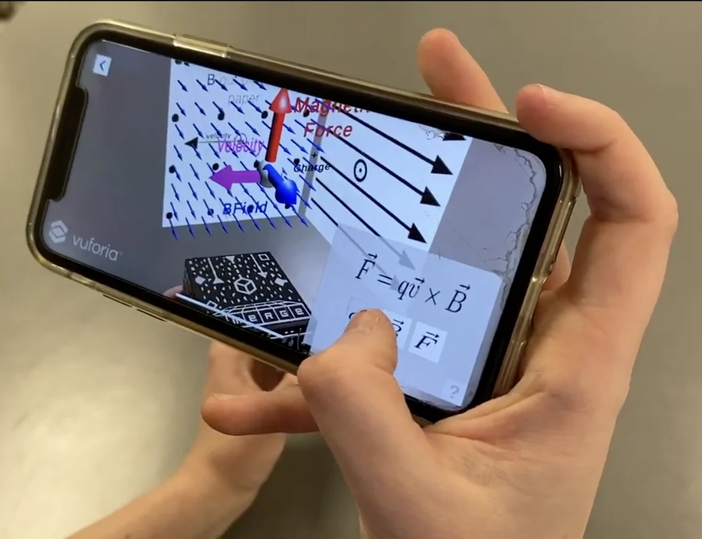
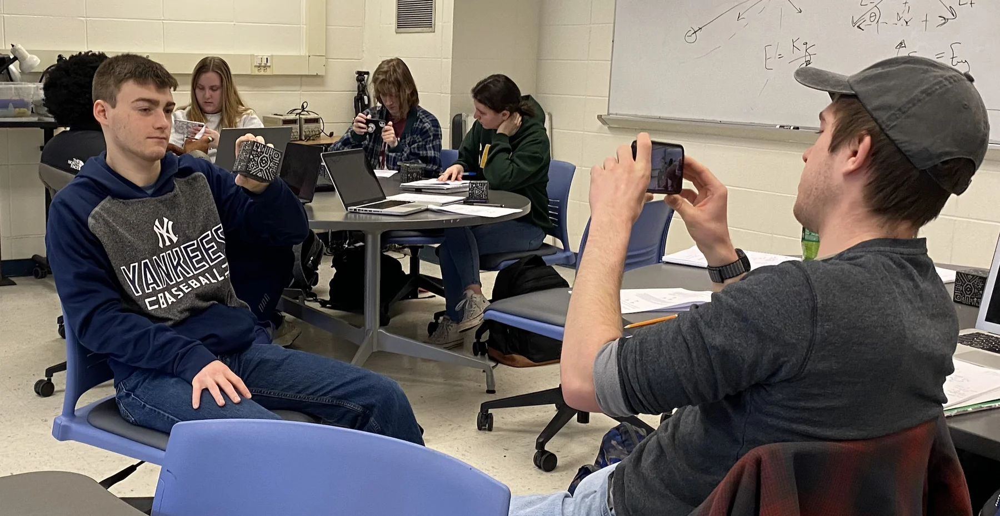
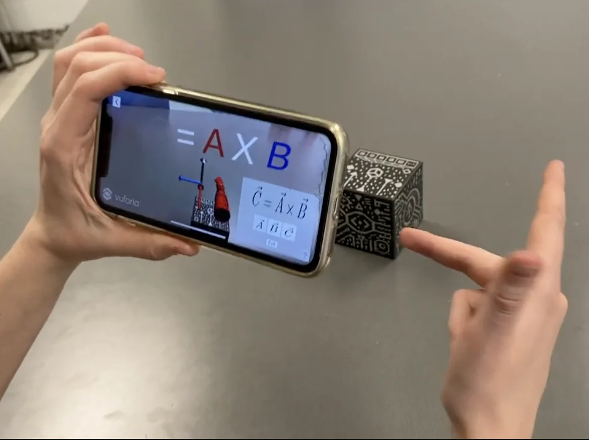
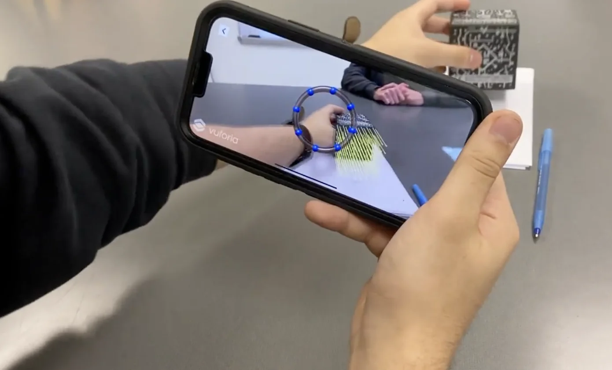
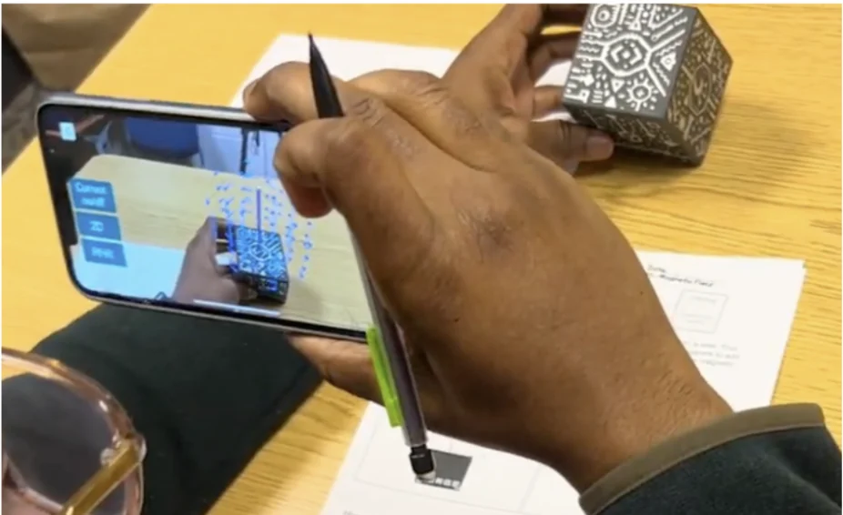
Inside the app
Magnetism models in MARVLS AR for Physics 2
App views show the interactive three-dimensional representations students use during the project lessons and research activities.
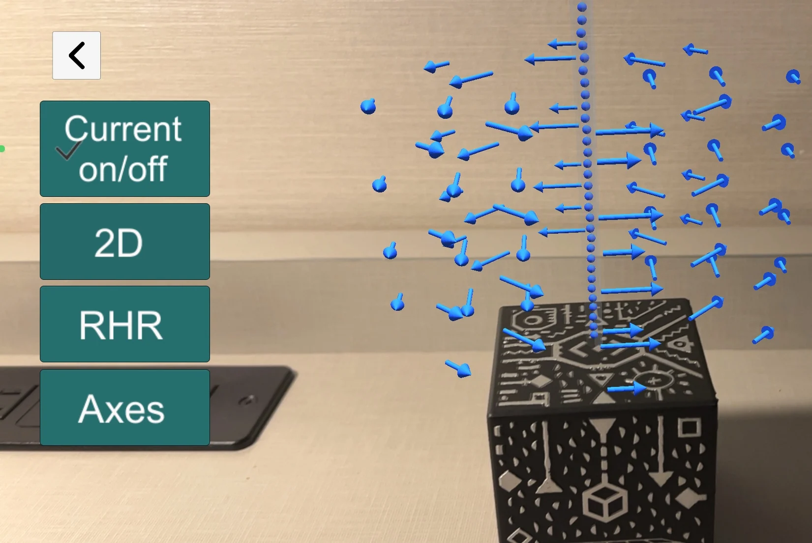
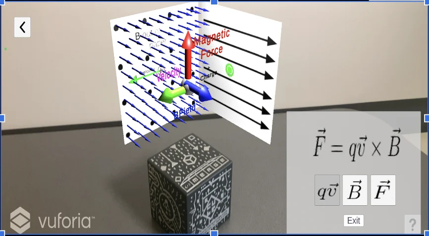
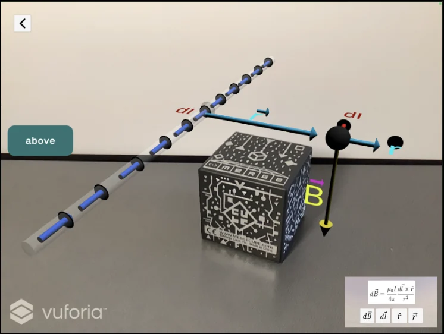
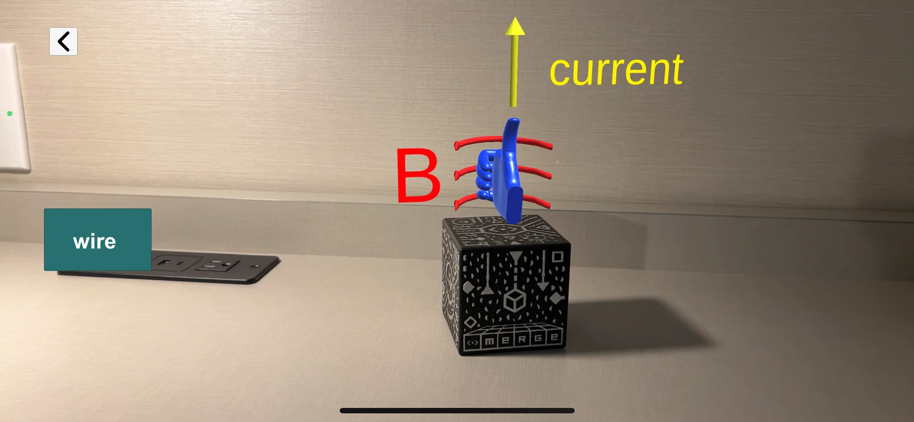
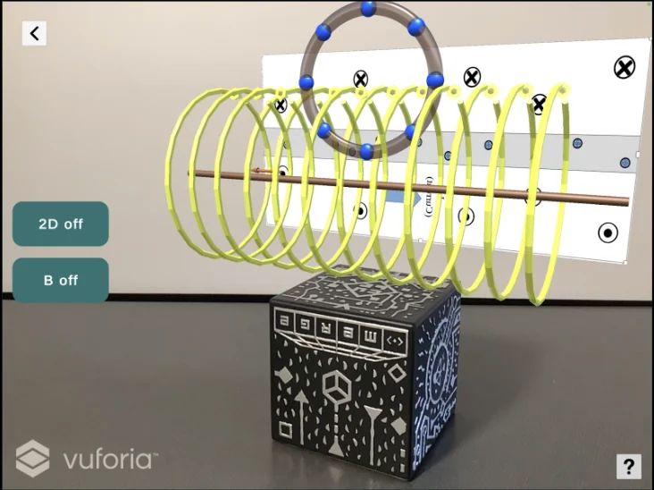
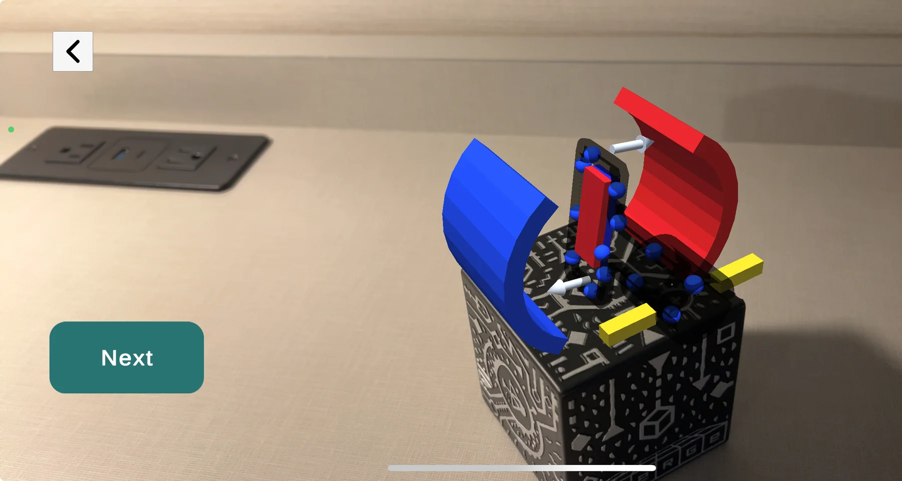